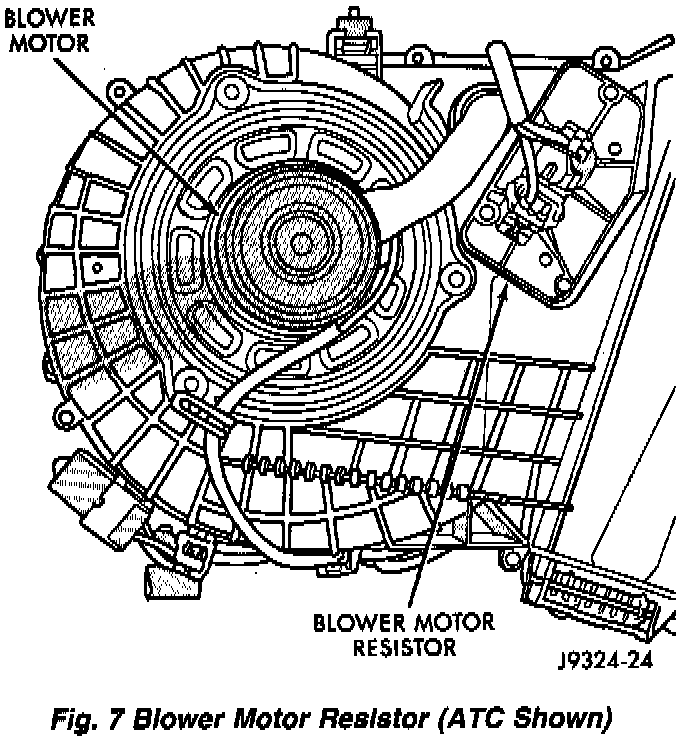

Blower Motor Resistor: Service and Repair
REMOVALThe blower motor resistor is located under the glove box and can be removed from the passenger compartment.
1. Disconnect the negative cable from the battery.
2. Remove the blower motor resistor connector(s).
3. Remove the resistor retaining screws.
Fig.7 Blower Motor Resistor (ATC Shown):

4. Remove the blower motor resistor.
INSTALLATION
1. Install the blower motor resistor. Install and tighten the screws.
2. Connect the resistor connectors.
3. Connect the negative cable to the battery.